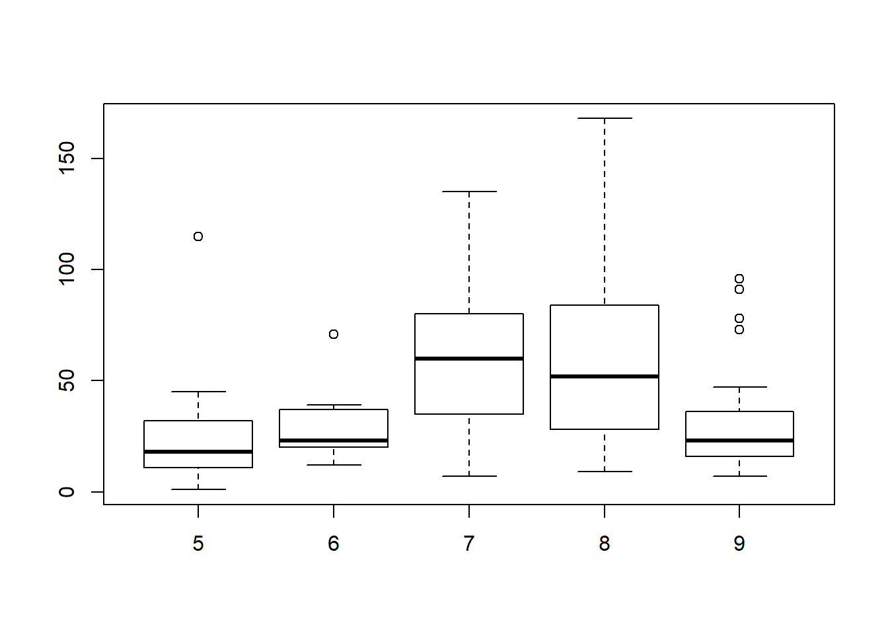
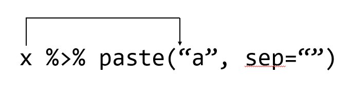

Chapter 5 Multivariate data
5.1 Introduction
앞서 장에서는 기본적인 변수에 대한 대표값들과 두 개 이상의 변수가 주어졌을 경우 그 관계를 정량화 하는 과정을 학습했습니다. 그러나 일반적인 데이터 분석은 두 개 이상의 변수와 샘플들에 대해서 정제, 변환, 가시화, 대표값 비교 및 모델링으로 이어지는 단계로 이루어질 수 있습니다. 본 장에서는 R을 사용해서 위 데이터 분석 과정을 수행하기 위해 필요한 프로그래밍 기술을 습득하기 위해 최근 대표적으로 사용되는 apply 함수들과 dplyr 패키지 사용에 대한 학습을 목표로 합니다.
5.2 Data structures in R
5.2.1 Vectors
같은 타입의 데이터를 (Numeric, character, factor, …) 모아 놓은 컨테이너로서 인덱스는 [, ]를 사용합니다.
5.2.2 Lists
앞 장에서 학습한 것처럼 list 변수 타입은 vector 형태의 여러개의 element를 가질 수 있으며 각 element의 데이터는 문자나 숫자 어떤 데이터 타입도 가능하며 각 element vector의 길이가 모두 달라도 됩니다. list의 인덱싱에서 [ ]는 리스트를 반환하고 [[ ]]는 vector element들을 반환합니다.
5.2.3 Matrices
메트릭스는 같은 타입의 데이터로 채워진 사각형 모양을 갖는 컨테이너로 볼 수 있습니다. 인덱스는 [i, j] 형태로 i는 row, j는 column 을 가리킵니다. 메트릭스의 생성은 matrix 명령어를 사용하며 다음과 같이 각 column 별로 값을 채워 나가는 것이 기본 설정이며 byrow=T 를 통해 row를 다 채우고 그 다음 row를 채워 나가게 할 수도 있습니다.
row와 column 이름은 rownames와 colnames로 설정이 가능하며 rbind와 cbind는 벡터를 연결하고 붙이는 역할을 할 수 있으나 데이터가 많거나 반복해서 수행할 경우 컴퓨터의 리소스를 많이 사용하는 문제로 느려질 수 있습니다.
5.2.4 data.frame
data frame은 변수들의 집합으로 list형과 비슷하지만 각 변수 element들이 똑같은 길이를 가지고 matrix 형태로 표현되는 것이 다릅니다. 변수들의 이름을 이용하여 $ 기호로 각 변수들의 데이터에 접근 할 수 있고 matrix와 같이 [i,j] 형태의 인덱싱도 가능합니다.
5.3 Working with data frame I
앞서 잠깐 소개한 것과같이 일반적인 데이터 분석은 데이터 클리닝, 변환, 가시화, 대표값비교, 모델링의 반복적인 수행으로 진행될 수 있습니다. 특히 R에서는 data frame 타입의 데이터로 대부분의 분석이 진행되므로 data frame 기반의 다양한 기법을 익혀야 합니다.
5.3.1 some exercises
EXERCISE state.x77 데이터셋에서 population과 Life Exp, 그리고 Murder 변수만을 이용한 새로운 matrix를 만드시오.
EXERCISE 위 matrix에 각 주의 이름을 값으로 갖는 새로운 변수 state_name을 추가해 보시오
rownames(state.x77)
head(state.x77)
state_names <- rownames(state.x77)
newstate <- data.frame(state_names, state.x77[,c(1,4,5)])
head(newstate)
str(newstate)
newstate <- data.frame(state_names, state.x77[,c(1,4,5)], stringsAsFactors = F)
str(newstate)EXERCISE newstate data frame의 population과 Life Exp, Murder 변수들의 분포를 boxplot을 이용하여 비교하고 표준화 후 분포가 어떻게 변하는지 설명하시오
boxplot(newstate[,-1])
newstate$popstd <- (newstate$Population - mean(newstate$Population))/sd(newstate$Population)
newstate$lifexpstd <- (newstate$Life.Exp - mean(newstate$Life.Exp))/sd(newstate$Life.Exp)
newstate$murderstd <- (newstate$Murder - mean(newstate$Murder))/sd(newstate$Murder)
boxplot(newstate$popstd, newstate$lifexpstd, newstate$murderstd)
boxplot(data.frame(newstate$popstd, newstate$lifexpstd, newstate$murderstd))
## one vector, No use "c"
boxplot(c(newstate$popstd, newstate$lifexpstd, newstate$murderstd)) EXERCISE 세 변수간 상관계수를 구하고 관계를 그래프로 나타내시오.
5.3.2 subset and filter
subset함수를 이용하면 비교적 쉽게 원하는 조건을 갖는 subset 데이터를 만들 수 있습니다. filter 함수도 비슷한 기능을 수행합니다.
## Ozone Solar.R Wind Temp Month Day
## 1 41 190 7.4 67 5 1
## 2 36 118 8.0 72 5 2
## 3 12 149 12.6 74 5 3
## 4 18 313 11.5 62 5 4
## 5 NA NA 14.3 56 5 5
## 6 28 NA 14.9 66 5 6
## 7 23 299 8.6 65 5 7
## 8 19 99 13.8 59 5 8
## 9 8 19 20.1 61 5 9
## 10 NA 194 8.6 69 5 10위 데이터셋에서 NA를 제외한 나머지 데이터만으로 새로운 데이터셋을 만들어 봅시다. is.na함수를 사용하면 해당 데이터가 NA인지 TRUE 또는 FALSE 를 반환해 줍니다.
d[c(T,F,T,T),]
d
ds <- d[!is.na(d[,1]),]
ds <- ds[!is.na(ds[,2]),]
ds <- d[!is.na(d[,1]) & !is.na(d[,2]),]
ds <- subset(d, (!is.na(d$Ozone) & !is.na(d$Solar.R)))
ds <- subset(d, complete.cases(d))
ds2 <- filter(d, (!is.na(d$Ozone) & !is.na(d$Solar.R)))
ds2 <- filter(d, complete.cases(d))EXERCISE subset을 사용해서 Temp와 Month 변수만을 선택 후 새로운 data.frame ds3를 만드세요
5.3.3 transforming
대부분의 R에서 제공하는 함수는 argument로 전달되는 값에 의해 데이터가 바뀌지 않는 pure function 입니다. 그러나 argument에 의해서 데이터를 바꿀 수 있다면 편리한 경우가 있습니다. 다음 예처럼 with 또는 within 함수를 사용하면 argument로 전달되는 데이터가 변형되어 반환될 수 있습니다.
d <- airquality
d
d$Hr <- d$Day*24
with(d, {Day<10})
d2 <- within(d, {Hr2=Day*24})
#d3 <- transform(d2, {Hr4 = Day*24})
#d3EXERCISE d2 dataframe에서 Month를 day로 바꾸고 이를 다시 시간으로 바꾼 후 Hr2와 더한 새로운 Hr3 변수를 추가한 데이터프레임을 만드세요
5.3.4 reshaping
보통의 matrix나 data frame 형식의 raw 데이터는 샘플이 row에 나오고 column에는 변수가 위치하는 wide 형식의 데이터라고 볼 수 있습니다. 즉, 변수가 증가할 때 마다 wide하게 넓어지는 형식이고 그러나 R 기반의 데이터분석이나 모델링을 위해서는 필요에 따라 long 형식의 데이터로 변환할 필요가 있습니다. 이럴 때 주로 사용하는 함수는 reshape 함수나 reshape2 패키지의 melt 함수 입니다. 먼저 reshape 함수의 사용법을 알아 봅니다. reshape의 파라메터 중 direction=“wide” 이고 varying 또는 v.names 가 주어지지 않은 경우 idvar나 timevar에 명시된 변수를 제외하고 모두 시간에 따라 변하는 관측된 값이 됩니다. 아래 경우 Expt에 주어진 변수의 값들이 시간에 따라 변하는 값들을 갖는 관측 변수 이름으로 주어지고 idvar에 명시된 변수의 값들은 각 시간별로 관측된 데이터의 id가 됩니다.
#library(reshape2)
morley #long
speed_wide <- reshape(morley, idvar = "Run", timevar="Expt", direction="wide")
speed_wide이제 위 wide형 데이터를 long형 데이터로 바꿔보겠습니다.
reshape(speed_wide, idvar = "Run", direction = "long")
#wide
df <- data.frame(id = rep(1:4, rep(2,4)),
visit = I(rep(c("Before","After"), 4)),
x = rnorm(4), y = runif(4))
df
reshape(df, timevar = "visit", idvar = "id", direction = "wide")
#long
df3 <- data.frame(id = 1:4, age = c(40,50,60,50), dose1 = c(1,2,1,2),
dose2 = c(2,1,2,1), dose4 = c(3,3,3,3))
df3
df4 <- reshape(df3, direction = "long", varying = 3:5, sep = "")
head(df4)
summary(lm(age~dose, df4))5.3.5 merging data
merge 함수는 두 개 이상의 데이터셋을 통합하는 기능을 수행하는 함수입니다. 이 외에도 dplyr 패키지의 inner_join 함수도 많이 쓰이나 이는 이 후 dplyr 패키지 사용에 대한 내용을 배울 예정입니다.
EXERCISE 산모의 흡연 여부와 신생아 몸무게의 관계를 알아보는 데이터 분석입니다. UsingR 패키지의 babies 데이터셋에서 missing 값들에 대한 NA 처리 후 smoke 변수를 factor 형으로 변환한 데이터셋을 만들어 봅니다. 각 변수당 하나씩 처리를 해보고 within 함수도 사용해 보겠습니다 .
직관적으로 위와 같이 수행할 수 있으나 babies$ 를 반복해서 입력해주는 불편함이 있습니다.
또한 smoke 변수는 흡연 여부를 나타내는 범주형 변수로 0, 1, 2, 3 값은 의미가 없습니다. 사람이 읽을 수 있는 label을 붙인 factor 형 변수로 변환하겠습니다.
babies$smoke
b2 <- within(b, {
smoke = factor(smoke)
levels(smoke) = list(
"never" = 0,
"smoke now" = 1,
"until current pregnancy" = 2,
"once did, not now" = 3)
})
head(b2)본격적인 통계 분석을 아직 배우진 않았으나 처음 가설에 대한 간단한 결과를 보면 현재 흡연중인 산모는 임신기간과 신생아 몸무게와 음의 상관 관계가 있음을 알 수 있습니다.
dim(b2)
fit <- lm(gestation~smoke, b2)
summary(fit)
boxplot(gestation~smoke, b2, ylim=c(250, 300))
fit <- lm(wt~smoke, b2)
summary(fit)
boxplot(wt~smoke, b2)이제 smoke now 인 경우 또는 나이가 25세 미만인 경우의 샘플에 대해서 subdata를 만들어 봅니다 (subset 함수 사용, id, gestation, age, wt, smok 변수만 사용). 또한 이렇게 만들어진 두 데이터셋을 merge 함수를 이용해서 하나의 데이터셋으로 만들어 봅니다.
5.3.6 split
split 함수는 데이터 벡터를 주어진 factor 형 값으로 나누는 기능을 하는 함수 입니다.
g <- airquality$Month
head(airquality)
dim(airquality)
table(g)
l <- split(airquality, g)
length(l)
boxplot(l[[1]]$Ozone)EXERCISE airquality 데이터의 Month에 따른 Ozone 의 분포를 boxplot을 이용해서 비교하시오. (subset??)을 이용하여 Month에 따른 각각의 Ozone의 값들로 새로운 변수들 v5, v6, v7, v8, v9을 만들고 이들을 하나의 data frame으로 만드시오
## Ozone Solar.R Wind Temp Month Day
## 1 41 190 7.4 67 5 1
## 2 36 118 8.0 72 5 2
## 3 12 149 12.6 74 5 3
## 4 18 313 11.5 62 5 4
## 5 NA NA 14.3 56 5 5
## 6 28 NA 14.9 66 5 6
EXERCISE 가장 직관적으로 먼저 필요한 기능을 하나의 데이터 엘리먼트에 대해서 수행하는 스크립트를 먼저 작성해 보고 필요한 index를 붙이거나 for 문을 활용해서 원하는 형태의 데이터 변환을 완료하시오
oz <- data.frame(airquality$Ozone[airquality$Month==5],
airquality$Ozone[airquality$Month==6],
airquality$Ozone[airquality$Month==7],
airquality$Ozone[airquality$Month==8],
airquality$Ozone[airquality$Month==9])
oz <- list(airquality$Ozone[airquality$Month==5],
airquality$Ozone[airquality$Month==6],
airquality$Ozone[airquality$Month==7],
airquality$Ozone[airquality$Month==8],
airquality$Ozone[airquality$Month==9])
boxplot(oz)
##
soz <- list()
soz[[1]] <- (oz[[1]]-mean(oz[[1]], na.rm=T))/sd(oz[[1]], na.rm=T)
soz[[2]] <- (oz[[2]]-mean(oz[[2]], na.rm=T))/sd(oz[[2]], na.rm=T)
soz[[3]] <- (oz[[3]]-mean(oz[[3]], na.rm=T))/sd(oz[[3]], na.rm=T)
soz[[4]] <- (oz[[4]]-mean(oz[[4]], na.rm=T))/sd(oz[[4]], na.rm=T)
soz[[5]] <- (oz[[5]]-mean(oz[[5]], na.rm=T))/sd(oz[[5]], na.rm=T)
soz
boxplot(soz)
soz <- list()
for(i in 1:5){
soz[[i]] <- (oz[[i]]-mean(oz[[i]], na.rm=T))/sd(oz[[i]], na.rm=T)
}
boxplot(soz)반복적으로 수행하는 일들은 apply 계열 함수를 사용하면 쉽게 기능을 수행할 수 있습니다.
5.4 working with data frame II
앞서 배운 일련의 작업들은 R에서 기본적으로 제공되는 함수를 사용한 경우입니다. 이 외에 R이 갖는 장점인 행렬, 벡터연산 기능을 최대한 활용할 수 있는 기능들에 대한 내용을 배워봅니다. dplyr, reshape2 등의 별도 패키지에대한 설치가 필요합니다.
5.4.1 apply
데이터를 다룰 때 각 원소별, 그룹별, row, column 별로 다뤄야 할 경우가 많으며 apply 계열의 합수는 이러한 기능을 제공하는 함수로써 적절히 사용하면 효율성이나 편리성 뿐만 아니라 코드의 간결성 등 장점이 많은 기능입니다. colMean 과 같은 함수는 column 또는 row 단위로 해당하는 모든 값들에 대해 연산을 수행해주는 함수로 colMean은 평균을 계산하는 함수이고 일반적으로는 다음과 같이 apply 함수와 mean 함수를 이용해서 같은 기능을 수행할 수 있습니다. 아래는 앞서 babies 데이터셋 clearning 된 b2 데이터에 이어서 수행되는 내용입니다.
library(UsingR)
b <- within(babies, {
gestation[gestation==999] <- NA
wt[wt == 999] <- NA
})
b2 <- within(b, {
smoke = factor(smoke)
levels(smoke) = list(
"never" = 0,
"smoke now" = 1,
"until current pregnancy" = 2,
"once did, not now" = 3)
})
b3 <- b2[,c("gestation", "wt", "dwt")]
colMeans(b3)
colMeans(b3, na.rm=T)
b4 <- within(b3, dwt[dwt==999]<-NA)apply는 다음과 같이 작동을 합니다.

apply(b4, 1, mean)
apply(b4, 2, mean)
apply(b4, 2, mean, na.rm=T)
apply(b4, 2, sd)
apply(b4, 2, sd, na.rm=T)
apply(b4, 2, function(x){
xmean <- mean(x, na.rm=T)
return(xmean)
})임의의 함수를 만들어서 사용할 수도 있습니다. apply 함수를 사용할 경우 행렬이 커질수록 계산 시간도 빨라질 수 있습니다.
n <- 40
m <- matrix(sample(1:100, n, replace=T), ncol=4)
m
mysd <- function(x){
xmean <- sum(x)/length(x)
tmpdif <- x-xmean
xvar <- sum(tmpdif^2)/(length(x)-1)
xsd <- sqrt(xvar)
return(xsd)
}
mysd(m[1,])
apply(m, 1, mysd)
apply(m, 1, sd)[EXERCISE] for 문과 mysd를 이용하여 위 행렬 m의 4개 컬럼에 대한 stadard deviation을 구하시오
5.4.2 map and apply function family
apply 함수 외에도 sapply, lapply, mapply 등의 다양한 apply계열 함수가 쓰입니다.
# map
collection <- c(4, 9, 16)
Map(sqrt, collection)
sqrt(collection)
sapply(collection, sqrt)
#
lst <- with(ToothGrowth, split(len, supp))
sapply(lst, mean)
sapply(lst, median)
Map(median, lst)
median(lst)
mean(lst)
# mapply
Map(min, c(1,4), c(2,3))
#simplification of output
mapply(min, c(1,4), c(2,3)) sapply는 lapply와 유사하며 벡터, 리스트, 데이터프레임 등에 함수를 적용하고 그 결과를 벡터 또는 행렬로 반환합니다.
5.4.3 dplyr - pipe operator
dplyr은 테이블형 데이터를 다루기 위한 도구를 제공하는 매우 편리한 패키지 입니다. %>% 파이프 오퍼레이터를 사용하여 여러 함수를 연속적으로 사용할 수 있으며 R의 장점 중 하나인 apply와 같은 행렬 연산 기능을 subset, split, group 와 같은 행렬 편집 기능과 더하여 만들어낸 도구라고 할 수 있습니다 (홈페이지: https://dplyr.tidyverse.org/)
파이프 오퍼레이터 %>% 의 단축키는 Ctrl + Shift + m 입니다. 이 오퍼레이터는 %>%의 왼쪽 코드의 결과를 출력으로 받아 오른쪽 코드의 입력 (첫번째 파라미터의 값)으로 받아들이는 작동을 합니다. 다음 예에서 보면 sin(pi) 와 같은 함수의 일반적인 사용법 대신 pi %>% sin 처럼 사용해도 똑같은 결과를 보여줍니다. cos(sin(pi))와 같이 여러 합수를 중첩하여 사용할 경우에도 코드 디자인의 가독성이나 효율 측면에서 크게 향상된 방법을 제공해 줍니다.
특히 %>%는 이후 설명할 dplyr의 group_by, split, filter, summary 등의 행렬 편집/연산 함수를 빈번히 다양한 조합으로 쓰게되는 상황에서 더 큰 효과를 발휘할 수 있습니다. 그에 앞서 pipe 오퍼레이터의 예제를 좀 더 살펴보겠습니다.
pipe operator의 왼쪽 구문의 결과가 오른쪽 구문의 입력으로 처리된다고 설명드렸지만 엄밀히 따지면 오른쪽 구문의 첫 번째 파라미터의 입력 값으로 처리되는 것 입니다. 즉, 함수에서 사용되는 파라미터가 여러개일 경우가 있으므로 기본적으로 %>% 의 왼쪽 구문의 출력 값은 오른쪽 구문 (함수)의 첫 번째 인자의 입력값으로 들어가는 것 입니다.

이는 다음 예들을 통해서 명확히 알 수 있습니다. 먼저 paste함수는 그 파라미터로 ,로 구분되는 여러개의 입력 값을 가질 수 있습니다. 따라서 다음 코드는 x가 paste의 첫 번째 파라미터로 들어가게 되어 "1a", "2a", "3a", "4a", "5a" 로 a 앞에 x 값들이 붙어서 출력된 것을 알 수 있습니다.
특정 데이터셋의 컬럼별 평균을 구하고 각 평균의 합을 구할 경우를 생각해 봅시다. R에서는 colMeans라는 특별한 함수를 제공하여 컬럼별로 평균을 계산해 줍니다. 그 후 sum 함수를 사용하여 최종 원하는 값을 얻을 수 있습니다. 이러한 코드를 %>% 오퍼레이터를 사용한 경우의 코드와 비교해 볼 수 있습니다.
x <- data.frame(x=c(1:100), y=c(201:300))
sum(colMeans(x))
x <- data.frame(x=c(1:100), y=c(201:300))
x %>% colMeans %>% sum만약 두 번째 또는 다른 위치의 파라미터에 입력으로 왼쪽 구문의 출력을 받아들이고 싶을 경우는 place holer라는 . 을 사용하면 되겠습니다. round 함수는 두 개의 파라미터를 가지고 digits 값을 pipe operator로 넘겨주고 싶을 경우 아래와 같이 표현할 수 있습니다.
[EXERCISE] 다음 행렬 m의 컬럼별 표준편차를 앞서 만든 mysd 함수와 apply 함수를 사용하여 구하되 %>% 를 사용하시오
5.4.4 dplyr - Important functions
dplyr을 구성하는 중요한 함수는 다음 5가지가 있습니다.
- mutate() - 기존 데이터셋에 새로운 변수 추가
- select() - 주어진 데이터에서 변수 선택
- filter() - 특정 값을 기준으로 샘플 (case) 선택
- summarise() - 대표값 계산
- arrange() - 샘플들의 배열 변환
그리고 위 다섯개의 함수들과 결합해서 자주 사용되는 group_by() 함수가 있습니다. 특히 summarise 함수와 같이 사용될 때 강력한 성능을 발휘합니다. 여러개 함수를 동시에 적용할 때는 %>%를 이용할 수 있으며 summarise 외 5개 함수들은 행렬 편집을 위한 함수들로 보시면 되겠습니다.
예제를 수행하면서 각각의 기능을 살펴보고 그 장점이 무엇인지 파악해 보도록 하겠습니다. 예제에 사용할 데이터는 iris 데이터로 R을 설치하면 기본으로 들어있는 데이터 입니다. 세 종류의 iris 품종에 대한 꽃잎과 꽃받침의 length와 with를 측정해 놓은 데이터 입니다. head와 str 명령어를 이용해서 데이터를 살펴 봅니다. %>%를 배웠으니 써보겠습니다.
filter의 ,로 구분되는 매개변수는 and 로직으로 묶인 조건입니다. R에서 and는 &, or는 |, 그리고 not은 ! 으로 사용하면 되겠습니다.

Image from (https://r4ds.had.co.nz/)
head(iris)
filter(iris, Species=="setosa", Species=="versicolor")
filter(iris, Species=="setosa" & Species=="versicolor")
filter(iris, Species=="setosa" | Species=="versicolor") %>% dimarrange()는 샘플들의 배열 순서 즉, row의 순서를 바꾸는 기능을 수행합니다.
select() 는 주어진 데이터셋으로부터 관심있는 변수를 선택하여 보여줍니다. 다음 helper 함수들은 select 함수와 같이 유용하게 쓰일 수 있습니다.
- starts_with(“abc”) - “abc” 로 시작하는 문자열을 갖는 변수 이름
- ends_with(“xyz”) - “xyz”으로 끝나는 문자열을 갖는 변수 이름
- contains(“ijk”) - “ijk” 문자열을 포함하는 변수 이름
- matches(“(.)\1”) - 정규식, 반복되는 문자
head(iris)
select(iris, Species, everything())
select(iris, starts_with('S'))
select(iris, obs = starts_with('S'))
iris2 <- rename(iris, aavar = Petal.Length)
select(iris2, matches("(.)\\1"))
tmp <-iris[,3:5]
colnames(iris)[grep("^S", colnames(iris))]
iris[,grep("^S", colnames(iris))]
tmpmutate() 함수는 새로운 변수를 추가할 수 있는 기능을 제공합니다. within()과 비슷하다고 볼 수 있습니다.
summarise()는 data.frame내 특정 변수의 값들로 하나의 요약값/대푯값을 만들어 줍니다. summarise 함수는 단독으로 쓰이기 보다는 group_by() 기능과 병행해서 쓰이는 경우에 유용하게 쓰입니다. summarise_all() 함수를 사용하면 모든 변수에 대해서 지정된 함수를 실행합니다.
summarise(iris, mean(Sepal.Length), m=mean(Sepal.Width))
by_species <- group_by(iris, Species)
summarise(by_species, mean(Sepal.Width))
summarise_all(by_species, mean)
summarise_all(by_species, sd)위와 같은 dplyr 함수들은 %>%와 같이 사용되어 다중 오퍼레이션을 구현하면 더욱 강력한 효과를 발휘할 수 있습니다. 위에서 구한 품종별 꽃잎과 꽃받침의 평균 길이는 다음과 같이 구현할 수 있습니다.
여러 합수를 중접하여 한 줄로 코딩할 수 있지만 가독성이 떨어지므로 중첩해서 함수를 사용하는 습관은 어떤 프로그래밍 언어에서도 권장하지 않습니다.
iris %>% head(10)
iris$Species
iris_split <- split(iris, iris$Species)
iris_split %>% lapply(dim)
iris_split %>% lapply(class)
colMeans(iris_split[[1]][,-5])
x <- iris_split[[1]]
class(x)
head(x)
colMeans(x)
colMeans(x[,-5])
apply(x[,-5], 2, mean)
iris_means <- lapply(iris_split, function(x){colMeans(x[,1:4])})
iris_means
irisdat <- rbind(iris_means[[1]], iris_means[[2]], iris_means[[3]])
rownames(irisdat) <-names(iris_means)
irisdat
irisdat <- do.call(rbind, iris_means)
iris_means_df <- data.frame(iris_means)
iris_means_df
barplot(irisdat, beside = T, legend.text = rownames(irisdat))dplyr의 전신이라 할 수 있는 plyr 패키지는 다음과 같이 설명이 되어 있습니다. A set of tools for a common set of problems: you need to split up a big data structure into homogeneous pieces, apply a function to each piece and then combine all the results back together. 즉 split-apply-combine 세 가지 동작을 쉽게 할 수 있도록 만들어 놓은 툴 입니다. R이 다른 언어에 비해 데이터 분석에서 주목을 받는 이유로 split, apply 등의 행렬 연산 함수가 발달한 것을 내세우는데 dplyr은 이들보다 더 편리하게 데이터 조작을 할 수 있도록 만들어 놓은 것 입니다.
[EXERCISE] babies 데이터셋에서 산모의 흡연 여부를 기준으로 아이와, 아이의 엄마, 아빠의 몸무게 데이터에 대한 평균을 구하고 barplot으로 비교하는 분석 실습을 진행하겠습니다. 이 과정에서 split, apply, combine을 활용하여 평균을 구하는 코드와 dplyr 패키지를 사용하여 만든 코드를 비교해 보도록 하겠습니다. 대략적인 분석 프로세스는 다음과 같습니다.
- 필요 데이터셋 준비 - subset
- 데이터 클리닝, 변환 - within
- 그룹별 데이터 분리 - split
- 대표값 계산 - lapply, apply
- 계산값 통합 - rbind
- 그래프 비교 - barplot
head(babies)
mydat <- subset(babies, select = c(wt, wt1, dwt, smoke))
mydat <- within(mydat, {
wt[wt == 999] <- NA
wt1[wt1 == 999] <- NA
dwt[dwt == 999] <- NA
})
mydat <- within(mydat, {
smoke = factor(smoke)
levels(smoke) = list(
"never" = 0,
"smoke now" = 1,
"until current pregnancy" = 2,
"once did, not now" = 3)
})
mydat %>% str
by_smoke <- split(mydat, mydat$smoke)
by_smoke %>% lapply(dim)
apply(by_smoke[[1]][,-4], 2, mean, na.rm=T)
mysummary <- function(x){
apply(x[,-4], 2, mean, na.rm=T)
}
mysummary(by_smoke[[1]])
by_smoke_mean <- lapply(by_smoke, mysummary)
## for
wt_mean <- do.call(rbind, by_smoke_mean)
wt_mean
barplot(wt_mean, beside=T, legend.text = rownames(wt_mean), ylim=c(0,200))
#legend(x=1, y=150, legend = rownames(wt_mean))split은 factor형 변수를 기준으로 데이터를 나누어 주는 역할을 하며 lapply는 list 형 데이터를 각 리스트의 각각의 원소들에 대해서 function(x) 를 수행하는 역할을 합니다. 마지막 rbind를 이용해서 list를 data.frame으로 통합하며 이 때 do.call 함수를 사용할 수도 있습니다. 이제 dplyr 패키지를 이용하여 동일한 기능을 수행해 봅니다.
babies %>% str
tmp <- babies %>%
select(c(wt, wt1, dwt, smoke)) %>%
filter(wt!=999, wt1!=999, dwt!=999) %>%
mutate(smoke=factor(smoke)) %>%
group_by(smoke) %>%
summarise_all(mean)
tmp위에서 보듯 dplyr 패키지를 사용할 경우 그 결과는 같으나 코드의 가독성과 효율성면에서 장점을 보여줍니다. 여기서 group_by, summarise_all 함수 등의 자세한 사용법은 help 페이지를 참고해 주세요. 참고로 barplot은 numeric matrix 형태의 입력만을 받으므로 이에 맞도록 데이터를 다시 변형해야 합니다. 후에 배울 ggplot 을 이용하면 이러한 불편함이 없이 data.frame 형 데이터셋도 쉽게 가시화 할 수 있습니다.
5.5 Multivariate graphics - ggplot2 package
데이터 분석에서 데이터를 눈으로 확인하는 것은 중요합니다. 가능하면 raw 데이터를 보면서 크기 비교나 분포를 대략적으로 예측한다면 tool을 사용해서 나오는 결과를 가늠하는 척도가 될 수도 있습니다. 그러나 비교적 큰 데이터의 경우 눈으로 확인하는 것은 한계가 있으므로 그래프나 도표를 그려서 데이터의 분포를 확인하게 됩니다.
5.5.1 Bar graph with basic graph functions
Bar graph를 그리기 위한 데이터는 연속형과 범주형으로 나눌 수 있습니다. 아래 예제들은 후에 배울 ggplot의 stat 옵션을 설명하기 위한 예제들로 특정 변수에 대한 그래프를 그릴 때 변수의 값들을 count를 해야할지 아니면 그 값 그대로를 그릴지에 대한 설명을 이해하는데 도움을 줄 있습니다.
첫 번째는 x 변수가 연속형 (continuous)인 경우로 대부분의 경우 bar 그래프는 histogram 을 표현하는데 사용 됩니다. 즉, 특정 구간 내에 포함되는 x의 값의 갯수 (count)를 bar로 표현하는 것 입니다.
두 번째는 하나의 변수 x의 값이 이산형 (discrete) 일 경우에는 x가 갖는 각 값이 몇 개인지를 (count) 나타내기 위해서 bar 그래프를 그릴 수 있을 것 입니다. 아래 코드에서는 x 값 범주의 counting을 위해 table 함수를 사용하였습니다.
x <- sample(1:3, 100, replace = T)
count_x <- table(x)
barplot(count_x)
head(x)
class(x)
count_x
barplot(x)앞서 두 경우가 하나의 x 변수에 대한 값들을 bar graph로 표현한 경우라면 세 번째와 네 번째 경우는 변수가 두 개인 경우라고 볼 수 있습니다. 그 중 세번째 경우로 두 변수 x, y 가 있을 경우 x가 연속형 값을 갖고 y는 각 x 값의 빈도수를 나타내는 상황을 생각할 수 있습니다. 예를 들어 1.212값을 갖는 데이터가 20개이다 라는 상황을 가정할 경우 x=1.212 가 되고 y=20이 됩니다. 이 경우는 앞에서와 같은 카운팅은 필요 없이 x, y 값 그대로를 화면에 그려주면 됩니다.
마지막으로 앞서와 같이 두 개의 변수로 이루어져 있으나 x가 연속형이 아닌 이산형 변수라는 점이 다릅니다. y는 각 x 값들의 빈도수를 나타내며 이 경우도 x의 빈도수가 y값에 저장되어 있으니 y 값 그대로를 화면에 그려주면 됩니다.
5.5.2 Bar graph ggplot
ggplot의 문법은 간단히 다음과 같습니다. 각 요소들은 레이어 개념으로 생각하면 되며 각 레이어는 + 기호로 줄을 바꿔가며 사용할 수 있습니다.
- 데이터 지정 (ggplot)
- 색상, 크기, x축의 값, y축의 값 등 심미적 요소 지정 (aes)
- 점, 선, 면 등 기하학적 요소 지정 (geoms)
- 그릴 통계량 지정 (stats)
- 테마, 스케일 지정
이제 앞서와 같은 4가지 데이터들을 ggplot을 이용하여 차례로 bar graph를 그려 보겠습니다. 간단히 ggplot 함수로 먼저 데이터와 aes로 (미학요소 또는 미적요소) x축 y축 등을 명시하고 + 오퍼레이터를 사용하여 필요한 레이어를 차례로 추가하면서 그래프를 그릴 수 있습니다.
아래 ggplot2를 로딩후 ggplot을 실행할 경우 데이터와 x, y 축만 지정한 상태로 어떤 그래프 (히스토그램인지, 산포도인지 등)를 그릴지 명시되어 있지 않아서 아무것도 그리지 않은 상태의 빈 켄버스만 그려지게 됩니다.
library(ggplot2)
x <- rnorm(10)
y <- rnorm(10)
dat <- data.frame(x, y)
ggplot(data=dat)
ggplot(data=dat, aes(x=x, y=y))
dat+ 로 레이어를 추가하면서 geom_bar() 함수로 막대그래프를 그린다고 명시를 하면 되지만 geom_bar의 기본 stat은 count로 data의 y 값은 count 데이터가 아니므로 여전히 빈 화면을 보여줍니다.
따라서 stat을 “identity”로 명시하고 그릴 경우 정상적으로 barplot이 그려지게 됩니다.
x가 연속형일 경우 아래와 같이 histogram을 그려 줍니다. continuous 일 경우 stat은 bin으로 하면 특정 범위 안에 있는 값들의 빈도수를 계산하여 히스토그램을 그려줍니다.
dat <- data.frame(x1=rnorm(100))
barplot(dat$x1)
plot(x=1:length(dat$x1), y=dat$x1, type="h")
ggplot(dat, aes(x=x1)) +
geom_bar(stat="bin", bins=30)
datx가 이산형인 경우는 stat을 count로 설정하여 해당 값들의 빈도수를 그려줄 수 있으며
x <- sample(1:3, 100, replace = T)
x
dat <- data.frame(x=factor(x))
ggplot(dat, aes(x=x)) +
geom_bar(stat="count")세 번째, 네 번째 경우 x, y 두 변수에서 y가 x의 빈도수를 저장하고 있을 경우 x가 연속형, 이산형에 상관 없이 stat을 identity로 설정하여 bar graph를 그릴 수 있습니다.
x <- rnorm(10)
y <- rnorm(10)
dat <- data.frame(x, y)
ggplot(dat, aes(x=x, y=y)) +
geom_bar(stat="identity")
x1 <- as.factor(1:3)
y1 <- tabulate(sample(x1, 100, replace=T))
dat <- data.frame(x1, y1)
ggplot(dat, aes(x=x1, y=y1)) +
geom_bar(stat="identity") ggplot은 다음과 같이 다양한 레이어를 추가하여 필요한 기능을 사용할 수 있습니다.
5.5.3 Line graph with ggplot
다음으로 ggplot을 이용한 line graph를 그리는 방법을 알아 봅니다. 앞서 bar graph와의 관계를 보면 line graph는 bar graph의 각 bar에 해당하는 값들을 서로 선으로 이어주는 graph라고 볼 수 있겠습니다.
Line graph는 geom_line이라는 함수를 사용해서 그릴 수 있으며 stat의 사용법은 앞서 bar graph와 같습니다. Line graph에서 중요한 점은 아래 group 파라미터 입니다. 선이라는 것은 두 점 이상의 값들을 알 경우에만 연결할 수 있고 ggplot에서는 같은 그룹에 (group) 속해있는 두 개 이상의 값들을 선으로 연결한다는 의미 입니다. 그런데 우리가 가진 데이터 dat 에는 group을 나타내는 변수가 없습니다. 따라서 group=1이라고 할 경우 모든 값들이 같은 1 그룹에 있는 것으로 간주되고 모든 값들을 선으로 연결하는 line 그래프가 그려집니다. bar그래프와 다른 점은 group=1과 geom_bar 대신 geom_line을 사용한 점입니다. 그리고 bar graph의 fill 옵션은 bar의 색을 결정하는 부분으로 line 그래프에서는 bar가 없으므로 사용하지 않습니다.
ggplot(dat, aes(x=x1, y=y1, group=1)) +
geom_line(stat="identity") +
guides(fill=FALSE) +
xlab("Discrete cases") + ylab("Value") +
ylim(c(0,50))+
ggtitle("Barplot for x:discrete and y:value")추가로 아래와 같이 그려지는 선의 두께를 조절하고 점을 추가로 그려볼 수 있습니다. 점을 그리는 명령어는 geom_point로서 line 과 함께 그리는 것 이므로 + 오퍼레이터를 사용하여 geom_line 과 함께 사용하면 됩니다.
ggplot(dat, aes(x=x1, y=y1, group=1)) +
geom_line(size=2) +
geom_point(size=4, pch=21, fill="white") +
guides(fill=FALSE) +
xlab("Discrete cases") + ylab("Value") +
ylim(c(0,50))+
ggtitle("Barplot for x:discrete and y:value")같은 방법으로 bar 또한 같이 그려줄 수 있습니다. 여기서는 fill 옵션이 geom_bar에 하나 geom_point에 하나씩 쓰였는데 이는 각 geometry에 따라서 필요한 옵션이 다르므로 각각의 geom_xxx 를 사용할 때 상황에 맞게 (help 나 예제를 통해서) 사용하시면 되겠습니다.
5.5.4 Color, facet, heatmap
다음은 R의 기본 그래픽 함수와 ggplot을 이용한 비교 예제 입니다.
library(UsingR)
library(dplyr)
mycol <- c("black", "red", "blue", "red", "yellow", "brown")
mydat <- data.frame(Cars93$Price, Cars93$Horsepower, Cars93$Type)
head(mydat)
mycol2 <- Cars93$Type
levels(mycol2) <- mycol
mycol3 <- as.character(mycol2)
plot(Cars93$Price, Cars93$Horsepower, col=mycol3); legend(x=10, y=300, pch=19, col=levels(mycol2), legend = levels(Cars93$Type))ggplot 사용, 컬러 지정
ggplot(Cars93, aes(x=Price, y=Horsepower, color=Type)) +
geom_point() +
scale_color_manual(values=mycol)R에서는 컬러를 지정할 수 있는 다음과 같은 다양한 함수들을 제공합니다. scale_colour_brewer, scale_alpha, scale_colour_gradient, scale_colour_grey, scale_colour_hue, scale_colour_viridis_d 각 함수는 ggplot 명령어와 함께 사용할 수 있으며 자세한 사용법은 도움말을 참고하시기 바랍니다.
ggplot(Cars93, aes(x=Price, y=Horsepower, color=Type)) +
geom_point() +
scale_color_brewer(palette="Spectral")color는 태두리의 색을 지정하는 경우이며 fill은 내부의 색을 지정함을 참고하세요.
ggplot(Cars93, aes(x=Price, y=Horsepower, fill=Type)) +
geom_boxplot() +
scale_fill_brewer(palette="Spectral")facet_wrap 또는 facet_grid 등의 명령어로 여러 그래프를 그릴 수 있으며 x, y 배치는 formular 형태의 표현식을 사용해서 지정해 줍니다.
ggplot(Cars93, aes(x=Price, y=Horsepower, color=Type)) +
geom_point() +
geom_smooth() +
facet_wrap(.~Type, nrow=2)
ggplot(Cars93, aes(x=Price, y=Horsepower, color=Type)) +
geom_boxplot()다음과 같이 plot을 특정 변수에 저장하고 + 기호로 추가 레이어를 구성할 수 있으며 facet 그래프에서 scale=“free” 옵션으로 각 판넬의 x 또는 y축에 scale이 다르게 보여지게 할 수 있습니다.
p <- Cars93 %>% ggplot(aes(x=Weight, y=MPG.highway)) + geom_point()
p <- p + geom_smooth()
p
p + facet_wrap(~Type, nrow=2)
p2 <- p + facet_wrap(~Type, nrow=2, scale="free")
p2Heatmap은 geom_tile 함수를 사용하시면 됩니다.
5.5.5 reshape, scaling, tibble row and column names
앞서 5.3.4절에서는 reshape 함수를 이용해서 long 형이나 wide 형의 데이터들을 서로 형태를 전환하는 방법을 배웠습니다. 그러나 reshape 함수보다는 reshape2 패키지의 melt함수를 사용하는 것이 좀 더 직관적이어서 많이 사용되고 있습니다. long 형 데이터의 경우 id, variable, value 세가지 변수만 기억하면 되겠습니다. wide형 데이터를 잘 생각해 보면 id, variable, 그리고 value 이 세가지 요인이 주요 구성 요소임을 알 수 있습니다. data.frame 에 대한 melt 함수의 경우 (help 참고) id.vars 와 measure.vars 파라메터들을 제어해서 사용될 ID나 변수를 선택할 수 있고 value.name을 이용해서 value가 들어갈 변수 이름을 설정할 수 있습니다. 따로 설정하지 않으면 “value”라는 이름으로 저장 됩니다.
[EXERCISE] Cars93 데이터에서 numeric 인 변수들만을 뽑아서 별도의 데이터셋을 만들고 NA 제거, Price 기준으로 내림차순 정렬을 수행한 후 상위 30개 데이터만을 가지고 heatmap을 그리시오
library(UsingR)
library(dplyr)
library(reshape2)
str(Cars93)
#mydata <- Cars93 %>% select(Price, EngineSize, Horsepower, Length, Wheelbase, Width, Luggage.room, Weight)
mydata <- Cars93 %>% select_if(is.numeric) %>%
filter(complete.cases(.)) %>%
arrange(desc(Price)) %>%
mutate(id=factor(1:length(Price))) %>%
head(30)
mydata_mlt <- melt(mydata, id.vars="id")
ggplot(mydata_mlt, aes(x=id, y=variable, fill=value)) +
geom_tile(colour = "white") +
scale_fill_gradient(low = "white", high = "steelblue")
head(mydata_mlt)
## boxplot
ggplot(mydata_mlt, aes(x=variable, y=value)) +
geom_boxplot()위 그래프는 우리가 원하는대로 그래프가 출력되지 않았습니다. 원인은 스케일이 다르기 때문인데 이는 boxplot을 그려보면 알 수 있습니다. 이에 우선 scaling 을 수행해 보도록 하고 결과를 다시 heatmap을 이용해 표현해 보겠습니다.
library(viridis)
library(dplyr)
library(reshape2)
library(UsingR)
mydata2 <- Cars93 %>% select_if(is.numeric) %>%
filter(complete.cases(.)) %>%
apply(2, scale) %>%
as.data.frame() %>%
arrange(desc(Price)) %>%
mutate(id=factor(1:length(Price))) %>%
head(30)
mydata_mlt2 <- melt(mydata2, id.vars="id")
p <- ggplot(mydata_mlt2, aes(x=variable, y=id, fill=value)) +
geom_tile(colour = "white")
p
p + scale_fill_gradient(low = "white", high = "steelblue")
p + scale_fill_viridis()
p <- p + scale_fill_viridis() +
theme(axis.text.x = element_text(angle = 90, hjust = 1))
p
Cars93 %>% head[EXERCISE] 위 예제에서 id 대신 Cars93 의 Make 변수 값을 사용해서 다시 plot을 그리시오.
library(viridis)
library(tibble)
mydata2 <- Cars93 %>%
select(which(sapply(., class)=="numeric" | sapply(., class)=="integer"), Make) %>%
filter_all(function(x){!is.na(x)}) %>%
mutate_if(is.numeric, function(x){x/sum(x)}) %>%
as.data.frame() %>%
arrange(desc(Price)) %>%
column_to_rownames("Make") %>%
rownames_to_column() %>%
mutate(rowname=factor(rowname, levels=rowname[order(Price)])) %>%
head(30)
mydata_mlt2 <- melt(mydata2, id.vars="rowname")
p <- ggplot(mydata_mlt2, aes(x=variable, y=rowname, fill=value)) +
geom_tile(colour = "white") +
scale_fill_viridis(name="Scaled value") +
theme(axis.text.x = element_text(angle = 90, hjust = 1)) +
xlab("Variables") +
ylab("Make") +
ggtitle("")
p